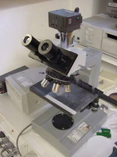

|  |
This test is particularly simple, involving
the use of an optical microscope to determine the typical pyramid size and the
percentage of the wafer surface effectively covered by pyramids. A graticule
on the eyepiece of the microscope facilitates reasonable accuracy (to within
about 10%) of the base dimensions of the pyramid. This test will therefore
return a dimension in microns for the average pyramid size that is representative
of the distance across the typical pyramid base. The test also returns a value
that represents the percentage of the wafer surface effectively covered by pyramids,
with the remainder representing the area that fails to cause incoming light
to receive a “double bounce”. Poor performance in this regard should also be
observable in the reflection test. |